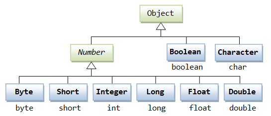

Java Number & Math Classes
Java Number
Generally, when numbers are needed, we usually use built-in data types, such as:byte、int、long、doubleetc.
Example
However, in actual development, we often encounter situations where objects are needed instead of built-in data types. To solve this problem, the Java language provides a corresponding wrapper class for each built-in data type.
All wrapper classes（Integer、Long、Byte、Double、Float、Short）are subclasses of the abstract class Number.
| Class Name | Corresponding Primitive Type | Description |
|---|---|---|
| Byte | byte | Byte wrapper class |
| Short | short | Short wrapper class |
| Integer | int | Integer wrapper class |
| Long | long | Long wrapper class |
| Float | float | Float wrapper class |
| Double | double | Double wrapper class |
| BigInteger | - | Immutable arbitrary-precision integer |
| BigDecimal | - | Immutable arbitrary-precision signed decimal number |

This kind of wrapping specially supported by the compiler is called boxing. So when a built-in data type is used as an object, the compiler boxes the built-in type into a wrapper class. Similarly, the compiler can also unbox an object into a built-in type.
The Number class belongs to the java.lang package.
Number is an abstract class whose main purpose is to provide unified conversion methods for various numeric types:
Example
// Abstract methods
public abstract int intValue();
public abstract long longValue();
public abstract float floatValue();
public abstract double doubleValue();
// Added in Java 8
public byte byteValue() {
return (byte)intValue();
}
public short shortValue() {
return (short)intValue();
}
}
Below is an example using an Integer object:
Test.java file code:
The result of compiling and running the above example is as follows:
15
When x is assigned an integer value, since x is an object, the compiler boxes x. Then, in order for x to perform addition, x needs to be unboxed.
Common method examples
Primitive type conversion
Example
System.out.println(num.intValue()); // 1234 (truncates decimals)
System.out.println(num.longValue()); // 1234
System.out.println(num.floatValue()); // 1234.56
System.out.println(num.doubleValue()); // 1234.56
Numeric comparison
Example
Integer x = 10;
Double y = 10.0;
// Correct comparison method: convert to the same type before comparing
System.out.println(x.doubleValue() == y.doubleValue()); // true
Special numeric handling
Handling large numbers
Example
BigDecimal bigDec = new BigDecimal("1234567890.1234567890");
// Large number arithmetic
BigInteger sum = bigInt.add(new BigInteger("1"));
BigDecimal product = bigDec.multiply(new BigDecimal("2"));
Number formatting
Example
nf.setMaximumFractionDigits(2);
System.out.println(nf.format(1234.5678)); // "1,234.57"
Autoboxing and Unboxing
Java 5+ supports automatic conversion:
Example
Integer autoBoxed = 42; // Compiler converts to Integer.valueOf(42)
// Auto-unboxing
int autoUnboxed = autoBoxed; // Compiler converts to autoBoxed.intValue()
Java Math Class
The Math class is a mathematical utility class provided by Java, located in the java.lang package, containing static methods for performing basic numeric operations.
Java's Math contains properties and methods for performing basic mathematical operations, such as elementary exponents, logarithms, square roots, and trigonometric functions.
All methods of Math are defined as static, so they can be directly called in the main function through the Math class.
Test.java file code:
The result of compiling and running the above example is as follows:
90 度的正弦值：1.0 0度的余弦值：1.0 60度的正切值：1.7320508075688767 1的反正切值： 0.7853981633974483 π/2的角度值：90.0 3.141592653589793
Advanced mathematical operations
1. Exponential and logarithmic operations
Example
Math.log(Math.E); // ln(e) = 1
Math.log10(100); // log10(100) = 2
2. Random number generation
Example
double random = Math.random();
// Generate a random integer in [1, 100]
int randomInt = (int)(Math.random() * 100) + 1;
3. Other operations
Example
Math.IEEEremainder(10, 3); // IEEE remainder → 1.0
4. Constant fields
Example
Math.E; // The base of natural logarithms e ≈ 2.718281828459045
Number & Math class methods
The following table lists some commonly used methods of the Number & Math classes:
| No. | Method and Description |
|---|---|
| 1 |
xxxValue() Converts a Number object to a value of the xxx data type and returns it. |
| 2 |
compareTo() Compares the number object with the argument. |
| 3 |
equals() Determines whether the number object is equal to the argument. |
| 4 |
valueOf() Returns a Number object of the specified built-in data type. |
| 5 |
toString() Returns the value as a string. |
| 6 |
parseInt() Parses the string as an int type. |
| 7 |
abs() Returns the absolute value of the argument. |
| 8 |
ceil() Returns the smallest integer greater than or equal to (>=) the given argument, as a double. |
| 9 |
floor() Returns the largest integer less than or equal to (<=) the given argument. |
| 10 |
rint() Returns the integer closest to the argument. The return type is double. |
| 11 |
round() It representsrounding, the algorithm isMath.floor(x+0.5), that is, add 0.5 to the original number and then round down. So, Math.round(11.5) results in 12, and Math.round(-11.5) results in -11. |
| 12 |
min() Returns the minimum of the two arguments. |
| 13 |
max() Returns the maximum of the two arguments. |
| 14 |
exp() Returns e (the base of natural logarithms) raised to the power of the argument. |
| 15 |
log() Returns the natural logarithm of the argument. |
| 16 |
pow() Returns the first argument raised to the power of the second argument. |
| 17 |
sqrt() Returns the arithmetic square root of the argument. |
| 18 |
sin() Returns the sine of the specified double argument. |
| 19 |
cos() Returns the cosine of the specified double argument. |
| 20 |
tan() Returns the tangent of the specified double argument. |
| 21 |
asin() Returns the arcsine of the specified double argument. |
| 22 |
acos() Returns the arccosine of the specified double argument. |
| 23 |
atan() Returns the arctangent of the specified double argument. |
| 24 |
atan2() Converts Cartesian coordinates to polar coordinates and returns the angle of the polar coordinates. |
| 25 |
toDegrees() Converts the argument to degrees. |
| 26 |
toRadians() Converts angles to radians. |
| 27 |
random() Returns a random number. |
Comparison of Math's floor, round, and ceil methods
| Parameter | Math.floor | Math.round | Math.ceil |
|---|---|---|---|
| 1.4 | 1 | 1 | 2 |
| 1.5 | 1 | 2 | 2 |
| 1.6 | 1 | 2 | 2 |
| -1.4 | -2 | -1 | -1 |
| -1.5 | -2 | -1 | -1 |
| -1.6 | -2 | -2 | -1 |
floor, round, and ceil examples:
The result of executing the above example is:
Math.floor(1.4)=1.0 Math.round(1.4)=1 Math.ceil(1.4)=2.0 Math.floor(1.5)=1.0 Math.round(1.5)=2 Math.ceil(1.5)=2.0 Math.floor(1.6)=1.0 Math.round(1.6)=2 Math.ceil(1.6)=2.0 Math.floor(-1.4)=-2.0 Math.round(-1.4)=-1 Math.ceil(-1.4)=-1.0 Math.floor(-1.5)=-2.0 Math.round(-1.5)=-1 Math.ceil(-1.5)=-1.0 Math.floor(-1.6)=-2.0 Math.round(-1.6)=-2 Math.ceil(-1.6)=-1.0Other extensions